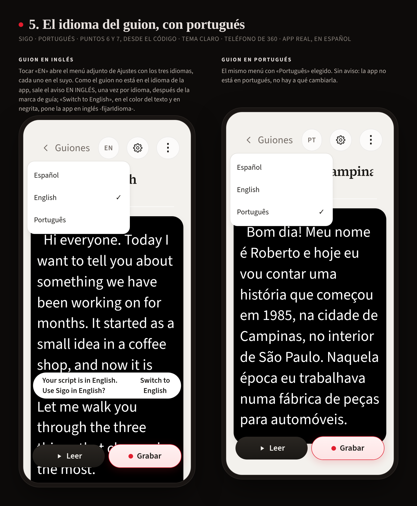
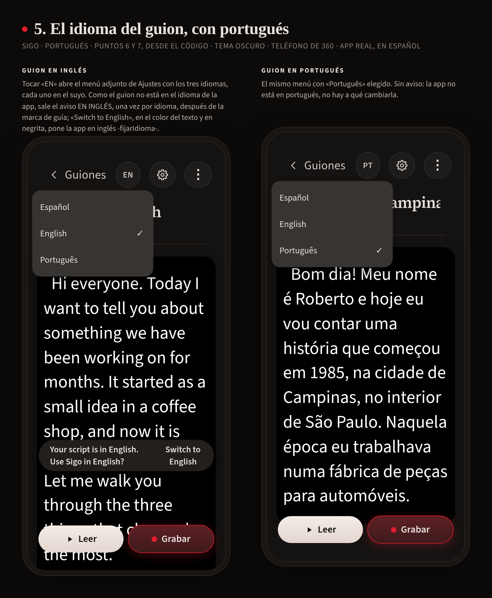

Puntos 6 -menú de tres idiomas- y 7 -el aviso- de la orden «portugues-voz», capturados de la app real con el código de la rama -2026-10-22-. Antes: el boceto del punto 5, dibujado encima de la app.

